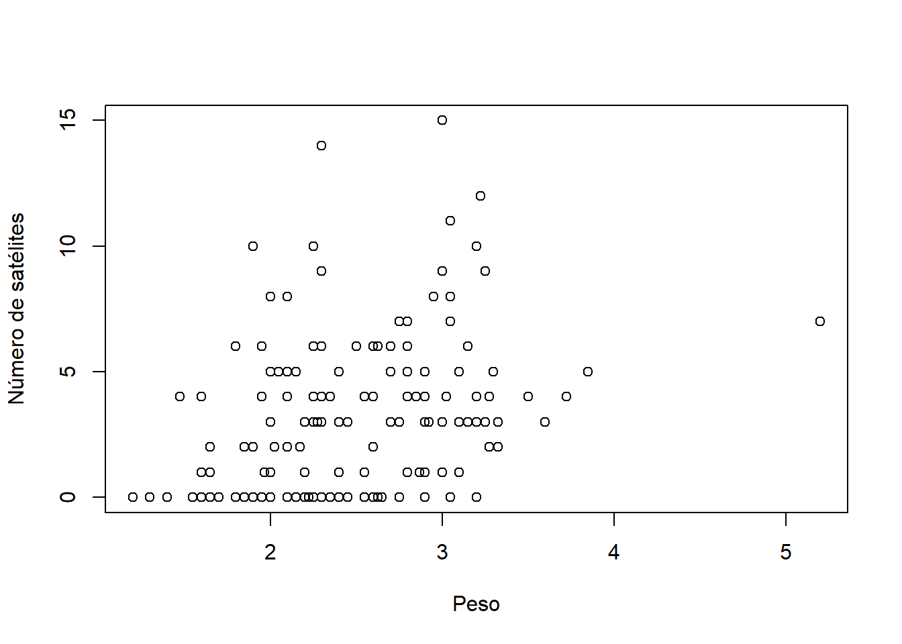
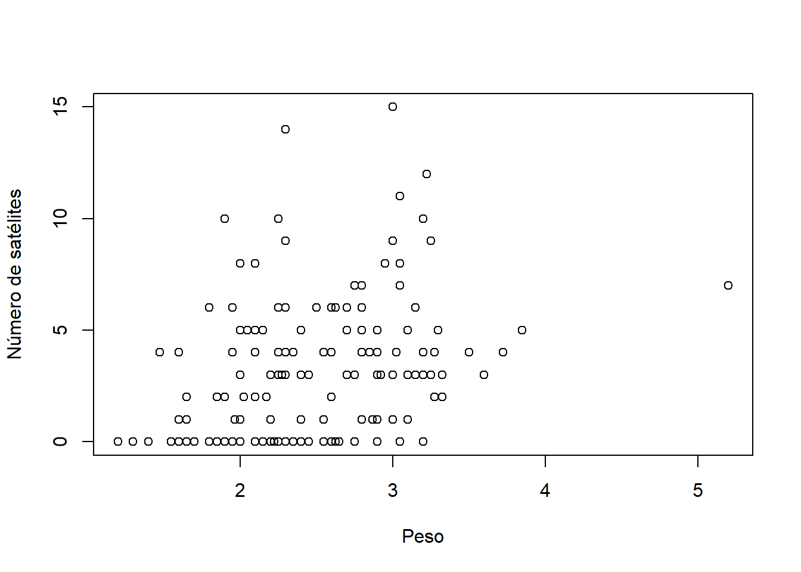
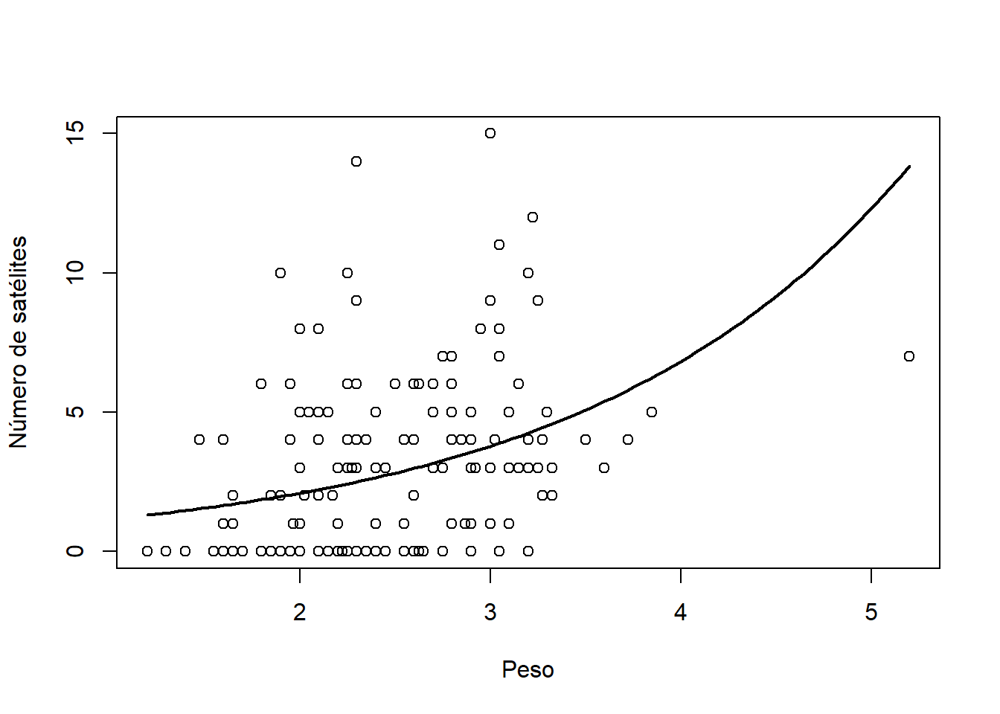

require(asbio)Carregando pacotes exigidos: asbioWarning: pacote 'asbio' foi compilado no R versão 4.5.1Carregando pacotes exigidos: tcltkdata(crabs)
plot(crabs$weight ,crabs$satell, xlab = 'Peso', ylab='Número de satélites')
Os caranguejos-ferradura vêm para a praia em pares para desovar. A fêmea, acompanhada de um macho, deposita seus ovos. Além desses casais, existem machos que não estão em par. Eles também chegam à praia e se aglomeram ao redor dos casais que estão desovando. Esses machos “solteiros” (chamados de machos satélites) competem com o macho que já está emparelhado com a fêmea. O objetivo deles é conseguir fertilizar os ovos da fêmea.
Em um estudo apresentado em Brockmann (1996), descobriu-se que a formação desses grupos de machos satélites não é aleatória. Não são fatores do ambiente que determinam onde eles se aglomeram, mas sim características da fêmea. Os dados deste estudo estão no pacote asbio sob o nome crabs. Abaixo, apresentamos o número de caranguejos satélites comparados com o peso da fêmea. Observe que:
Observa-se um aumento no número de satélites conforme o peso aumenta, embora essa relação não pareça ser linear.
Há um aumento na variância com o aumento do peso.
require(asbio)Carregando pacotes exigidos: asbioWarning: pacote 'asbio' foi compilado no R versão 4.5.1Carregando pacotes exigidos: tcltkdata(crabs)
plot(crabs$weight ,crabs$satell, xlab = 'Peso', ylab='Número de satélites')
A variável de interesse aqui é o número de satélites (\(Y\)) e o objetivo é determinar como ela varia com o peso \(x\). Deste modo, estamos interessados na regressão \(E(Y|x)\). Como se trata de um modelo de contagem, podemos assumir que \(Y|x\sim\hbox{Poisson}(\lambda(x))\).
Assim como na regressão logística, é usual reparametrizar o modelo Poisson de modo que o novo espaço paramétro seja \(\mathbb{R}\). A transformação usual é \(\eta=\log(\lambda)\), o que implica em \(\lambda=e^\eta\).
A principal vantagem desta nova parametrização está no fato de que, em geral, \[\eta_i = \beta_0+\beta_1 x_i=\underbrace{(1\;\;x_i)}_{\boldsymbol{x}'_i}\underbrace{\left(\begin{array}{c}\beta_0\\\beta_1 \end{array}\right)}_{\boldsymbol{\beta}}=\boldsymbol{x}'_i\boldsymbol{\beta}.\]
Como os parâmetros são semelhantes aos do modelo de regressão linear, podemos utilizar as mesmas priori discutidas anteriormente para este novo modelo.
Seja \(Y_1,\ldots,Y_n\) uma amostra de variáveis independentes com \(Y_i|\boldsymbol{x}\sim\hbox{Poisson}(\lambda_i)\) onde \[\log(\lambda_i)=\boldsymbol{x}'_i\boldsymbol{\beta},\] e \(\boldsymbol{\beta}\) e \(\boldsymbol{x}_i\) são vetores de comprimento \(k\). A função de verossimilhança para este modelo é dada por \[L(\boldsymbol{\beta})=\prod_{i=1}^n \frac{e^{-\lambda_i}\lambda_i^{y_i}}{y_i!}.\]
Como priori, considere inicalmente que:
\[\begin{align}\boldsymbol{\beta}|\phi &\sim\hbox{Normal}(\textbf{0}_k,\phi^{-1}(\boldsymbol{X}'\boldsymbol{X})^{-1} )\\ \phi&\sim \hbox{Gama}(\nu/2,b/2) \end{align}\] o que implica em \[\boldsymbol{\beta}\sim t_{\nu}(\textbf{0}_k, \frac{b}{\nu}\left(\boldsymbol{X}'\boldsymbol{X})^{-1}\right).\]
A posteriori é dada por
\[f(\boldsymbol{\beta}|\boldsymbol{y},\boldsymbol{x})\propto L(\boldsymbol{\beta})f(\boldsymbol{\beta})\]
Podemos então simular desta posteriori através do algoritmo Metropolis, utilizando como proposta a distribuição aproximada do estimador de máxima verossimilhança para \(\boldsymbol{\beta}\).
Exemplo
Vamos ajustar o modelo de regressão log-linear para os dados da introdução.
require(mvtnorm)Carregando pacotes exigidos: mvtnorm# hperparâmetros
nu = b = 3
# matriz de regressoras
X <- cbind(1, crabs$weight)
# vetor de respostas
y <- crabs$satell
# obtendo as estimativas de máxima verossimilhança e o informação de Fisher
mod <- glm( y~X-1, family=poisson( link = 'log'))
emv <- mod$coefficients
matriz_escala <- (summary(mod))$cov.unscaled
# implementando a função log-posteriori
Sigma <- solve(t(X)%*%X)
logPost <- function(beta){
eta = X%*%matrix(beta, ncol = 1)
lambda = exp(eta)
log_vero = sum( dpois(y,lambda, log = T))
log_prio = dmvt(beta, sigma = (b/nu)*Sigma, df = nu)
log_vero + log_prio
}
# simulando da posteriori
B = 50000
beta_sim <- array(NA_real_, c(B+1, length(emv)))
beta_sim[1,] <- emv
for(i in 1:B){
beta_cand <- rmvnorm(1, emv, matriz_escala)
alpha = exp(logPost(beta_cand) - logPost(beta_sim[i,]))
u = runif(1)
ifelse( u <alpha, beta_sim[i+1,] <- beta_cand, beta_sim[i+1,] <- beta_sim[i,])
}
beta_post <- beta_sim[ seq(B/2, B, 15), ]As estimativas para \(\boldsymbol{\beta}\) são
colMeans(beta_post)[1] -0.4341032 0.5894419O intervalo de credibilidade de 95% para \(\beta_1\), dado abaixo, apresenta evidências de que \(\beta_1>1\)
quantile(beta_post[,2], c(.025, .975)) 2.5% 97.5%
0.499258 0.678503 Ao testat \(H:\beta_1>0\), temos evidências decisivas sobre o efeito positivo no aumento do peso da fêmea no número de machos satélites.
mean(beta_post[,2]>0)[1] 1Abaixo, apresentamos o gráfico do início da seção com a curva \[\hat{\lambda}(x)=\exp\{-0.44+ 0.59x\}\]

É possível mostrar, comparando as frequências relativas com as probabilidades da preditiva a posteriori, que este modelo não é adequado. Contudo, uma análise conduzida com as demais variáveis mostra que o modelo log-linear é adequado.
Complete a análise dos dados da introdução.